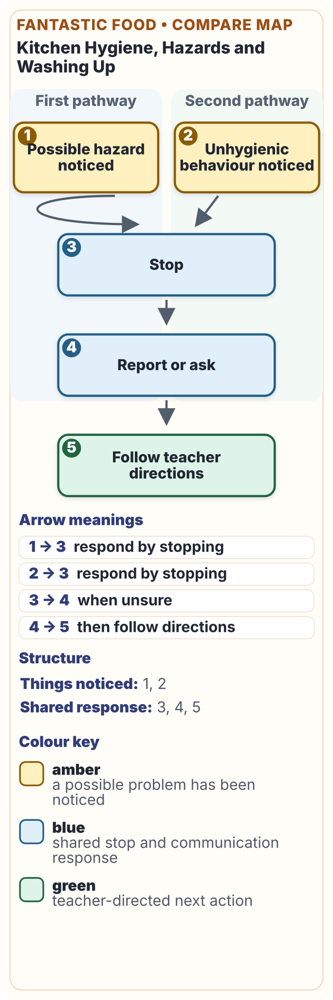

Your goal
Identify the readiness and hygiene actions you will use before practical food work.
Work in this order
- Return to the matching theory and current teacher source.
- Make the planning or evaluation decisions requested below.
- Save a specific explanation that can appear in My folio.

Not yet saved